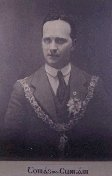
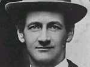

The murder of Tomás MacCurtain was a similar violation of his honourable office. Both Lord Mayors had a remarkably exalted sense of their 'great' city, as they termed it, and therefore of its highest position. [tomas mac curtain] Although they sensed their time was pitifully short, they both aspired to creating the ideal municipality in Cork and making it a model of reform and social justice. Their memory will be cherished as long as municipal government lasts in Cork. Both Lord Mayors put the city not alone before self-interest but above party and faction. For them, truly, authority was service. Their ultimate sacrifice was as much civic as nationalist.
TOMÁS MacCURTAIN (1884 - 1920) nationalist

Born 1st March 1884, Ballyknockane, County Cork and educated at Burnfort National School and the North Monastery School, Cork. Joined the Blackpool branch of the Gaelic League 1901 and became its secretary 1902. Joined the Cork branch, National Council of Sinn Féin, 1907 and became a member of the IRB. From 1911 he was involved in the running of Fianna Éireann, and he became a Volunteer in 1914. Contributed to Fianna Fáil , a weekly paper published by Terence MacSwiney, 1914. With MacSwiney he dispersed the Volunteers in Cork in obedience to MacNeill's countermanding order at Easter 1916. Served prison terms in 1916 and 1917 in Wakefield, Frongoch, and Reading. Elected as Sinn Féin councillor for Cork Northwest in the 1920 local government elections.
On 30 January 1920 he was elected Lord Mayor. In the early morning of Saturday 20 March he was murdered in his home. A coroner's jury returned a verdict of wilful murder against the Royal Irish Constabulary.
TERENCE MacSwiney (1879 - 1920) revolutionary

In 1911 Cork County Council appointed him commercial teacher and organiser of classes in the towns of County Cork. One of the principals in the forming of the Cork Volunteers in December 1913; two years later he resigned from the Cork County Committee of Technical Instruction to become a full-time organiser for the Volunteers. In 1914 he published a weekly paper, Fianna Fáil, written almost entirely by himself. It was suppressed after eleven issues. A series of articles he wrote for Irish Freedom between 1912 and 1916 was published posthumously as Principles of Freedom (1921). Arrested in January 1916 and charged with making a seditious speech at Ballymoe, County Cork, but released in February without being brought to trial.
On Easter Sunday 1916 he obeyed MacNeill's countermanding order and travelled to Tralee with a British army permit to persuade the Kerry Volunteers to give up their arms on agreed conditions. Imprisoned for short terms in 1916 and 1917; elected to first Dáil as member for West Cork. Active in setting up Dáil Éireann's Arbitration Courts. Following the murder of his friend Tomás MacCurtain in March 1920, MacSwiney was elected Lord Mayor of Cork.
On 12 August 1920 the British army raided City Hall and arrested him and others. The prisoners agreed that they should go on hunger strike. All but the Lord Mayor were released three days later. On 16 August he was court-martialled and sentenced to two years' imprisonment. He told the court that by taking no food he would put a limit to any term of imprisonment imposed. On 18 August he was given into the custody of Brixton Prison in such a state of collapse that the prison doctor decided that he would not be able to survive forcible feeding. However, on 21 October, when his condition had worsened considerably, attempts were made to force-feed him. His case attracted worldwide attention and many efforts were made to persuade the British government to release him. He died at Brixton on 24 October, the seventy-fourth day of his fast.